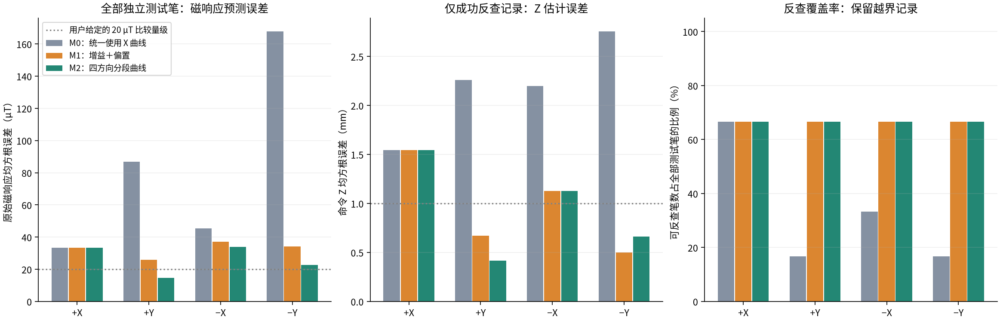
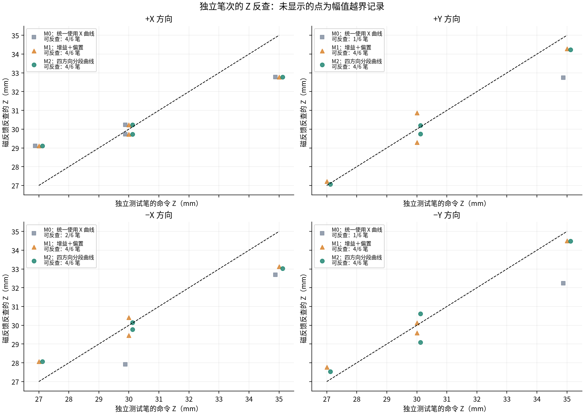
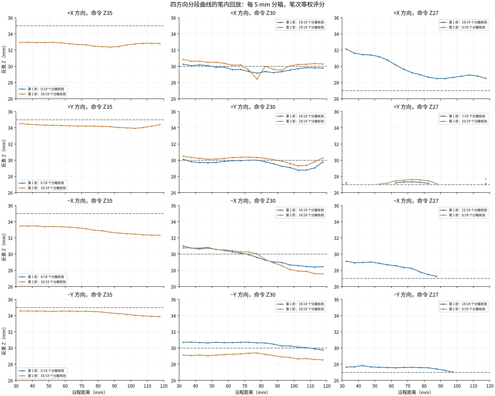

48 笔原始记录：核心 24 笔、旧 X/Z30 2 笔、7/15 mm/s 16 笔、半程下压 6 笔。仅离线计算，未连接机器人，未修改控制配置。主窗口 30–120 mm；另以 50–100 mm 检查起笔排除敏感性。
指标说明：RMSE 为均方根误差，MAE 为平均绝对误差；TCP 为工具中心点。Z 是机器人命令高度，单位为毫米。
M0 所有方向使用当前新 X 曲线；M1 增益＋偏置由训练折三高度等权拟合；M2 各方向独立三节点分段曲线。每条件第一笔训练、第二笔测试，再交换。24 笔各作为测试一次。训练笔次与测试笔次严格分开。原始幅值预测评分包括全部测试笔；Z 反查 RMSE 仅对支持范围内记录计算，因此必须同时看覆盖率。越界不裁切、不外推。
方向修正有明显作用：全部测试笔的原始响应 RMSE 从 98.56 降到 27.42 µT，下降约 72.2%。严格支持范围内 M2 的 Z RMSE 为 1.03 mm，可反查 16/24 笔。其余笔次保留为越界，不能把成功子集的低误差当作全范围通过。
M2 的 +Y 换算优于 M1；−X 的两种方向模型在共同可反查笔上几乎相同；−Y 的 M1 在本批 Z 反查中更好。M2 的全体 Z RMSE 并未显著优于 M1。可把方向模型作为当前装配下的磁目标换算候选，尚不能认定为稳定的全方向 Z 反馈。
逐笔中位数不能代替笔内回放：−X/Z30 两笔的中段反查 Z 均从约 31 mm 向约 28 mm 变化，而命令 Z 保持 30 mm。5 mm 分箱测试中，M2 的 +X/−X 误差更大。该发现说明仅用方向和磁幅值反查 Z，仍存在未建模的沿程或接触状态变化；本测试不能识别其物理原因。
| 方向 | 方法 | 原始响应 RMSE/µT（全部） | Z MAE/mm（有效） | Z RMSE/mm（有效） | 最大 Z 误差/mm（有效） | 可反查笔数 | 全部测试中 ≤1mm |
|---|---|---|---|---|---|---|---|
| 总体 | M0：统一使用 X 曲线 | 98.56 | 1.78 | 2.00 | 2.75 | 8/24 | 2/24 |
| +X | M0：统一使用 X 曲线 | 33.49 | 1.21 | 1.55 | 2.23 | 4/6 | 2/6 |
| 总体 | M1：增益＋偏置 | 32.98 | 0.81 | 1.04 | 2.23 | 16/24 | 12/24 |
| +X | M1：增益＋偏置 | 33.49 | 1.21 | 1.55 | 2.23 | 4/6 | 2/6 |
| 总体 | M2：四方向分段曲线 | 27.42 | 0.76 | 1.03 | 2.23 | 16/24 | 12/24 |
| +X | M2：四方向分段曲线 | 33.49 | 1.21 | 1.55 | 2.23 | 4/6 | 2/6 |
| +Y | M0：统一使用 X 曲线 | 86.85 | 2.26 | 2.26 | 2.26 | 1/6 | 0/6 |
| +Y | M1：增益＋偏置 | 25.92 | 0.62 | 0.67 | 0.87 | 4/6 | 4/6 |
| +Y | M2：四方向分段曲线 | 14.59 | 0.32 | 0.41 | 0.76 | 4/6 | 4/6 |
| −X | M0：统一使用 X 曲线 | 45.51 | 2.19 | 2.20 | 2.31 | 2/6 | 0/6 |
| −X | M1：增益＋偏置 | 37.25 | 0.97 | 1.13 | 1.87 | 4/6 | 2/6 |
| −X | M2：四方向分段曲线 | 34.06 | 0.85 | 1.13 | 1.97 | 4/6 | 2/6 |
| −Y | M0：统一使用 X 曲线 | 167.70 | 2.75 | 2.75 | 2.75 | 1/6 | 0/6 |
| −Y | M1：增益＋偏置 | 34.18 | 0.45 | 0.50 | 0.76 | 4/6 | 4/6 |
| −Y | M2：四方向分段曲线 | 22.64 | 0.64 | 0.66 | 0.91 | 4/6 | 4/6 |
只比较两算法均支持的同一笔，不能用不同成功子集的 RMSE 判断优劣。此子集也不替代总体覆盖率。
| 方向 | 比较 | 共同笔数 | 方法 A 的 Z RMSE/mm | M2 的 Z RMSE/mm |
|---|---|---|---|---|
| 总体 | M0：统一使用 X 曲线 与 M2 分段曲线 | 8 | 2.00 | 1.34 |
| +X | M0：统一使用 X 曲线 与 M2 分段曲线 | 4 | 1.55 | 1.55 |
| 总体 | M1：增益＋偏置 与 M2 分段曲线 | 15 | 1.08 | 1.07 |
| +X | M1：增益＋偏置 与 M2 分段曲线 | 4 | 1.55 | 1.55 |
| +Y | M1：增益＋偏置 与 M2 分段曲线 | 3 | 0.77 | 0.48 |
| −X | M0：统一使用 X 曲线 与 M2 分段曲线 | 2 | 2.20 | 1.40 |
| −X | M1：增益＋偏置 与 M2 分段曲线 | 4 | 1.13 | 1.13 |
| −Y | M1：增益＋偏置 与 M2 分段曲线 | 4 | 0.50 | 0.66 |
| +Y | M0：统一使用 X 曲线 与 M2 分段曲线 | 1 | 2.26 | 0.76 |
| −Y | M0：统一使用 X 曲线 与 M2 分段曲线 | 1 | 2.75 | 0.51 |



只用本轮 Z35/Z27 预测 Z30 的独立笔。+Y/−X/−Y 的 X 参考仍可使用独立新 X/Z30；X 自身则完整留出 Z30。其他方向 Z30 是前一批记录，这项测试同时包含高度插值与时间变化。
| 方向 | 方法 | 响应 RMSE/µT | Z RMSE/mm（有效） | 可反查笔数 |
|---|---|---|---|---|
| 总体 | M0：统一使用 X 曲线 | 96.95 | 1.67 | 3/8 |
| +X | M0：统一使用 X 曲线 | 19.92 | 1.43 | 2/2 |
| 总体 | M1：增益＋偏置 | 33.33 | 1.05 | 8/8 |
| +X | M1：增益＋偏置 | 19.92 | 1.43 | 2/2 |
| 总体 | M2：四方向分段曲线 | 24.54 | 1.00 | 8/8 |
| +X | M2：四方向分段曲线 | 19.92 | 1.43 | 2/2 |
| +Y | M0：统一使用 X 曲线 | 79.50 | — | 0/2 |
| +Y | M1：增益＋偏置 | 45.35 | 1.16 | 2/2 |
| +Y | M2：四方向分段曲线 | 9.24 | 0.34 | 2/2 |
| −X | M0：统一使用 X 曲线 | 31.07 | 2.08 | 1/2 |
| −X | M1：增益＋偏置 | 18.08 | 0.68 | 2/2 |
| −X | M2：四方向分段曲线 | 20.46 | 0.95 | 2/2 |
| −Y | M0：统一使用 X 曲线 | 172.95 | — | 0/2 |
| −Y | M1：增益＋偏置 | 40.79 | 0.77 | 2/2 |
| −Y | M2：四方向分段曲线 | 38.83 | 0.98 | 2/2 |
速度只在 Z30 检查；速度记录属于更早批次，因此不能把迁移差异单独归因于速度。扫描仅评分沿程主窗口内、Z27–35 的下降段；无校准范围覆盖的轨迹不参与范围内评分。
| 类别 | 方向 | 方法 | 响应 RMSE/µT | Z RMSE/mm（有效） | 可反查覆盖率 | 有效/总点数 |
|---|---|---|---|---|---|---|
| 旧批次 X/Z30 | 总体 | M0：统一使用 X 曲线 | 86.68 | — | 0.0% | 0/2 |
| 旧批次 X/Z30 | +X | M0：统一使用 X 曲线 | 86.68 | — | 0.0% | 0/2 |
| 旧批次 X/Z30 | 总体 | M1：增益＋偏置 | 86.68 | — | 0.0% | 0/2 |
| 旧批次 X/Z30 | +X | M1：增益＋偏置 | 86.68 | — | 0.0% | 0/2 |
| 旧批次 X/Z30 | 总体 | M2：四方向分段曲线 | 86.68 | — | 0.0% | 0/2 |
| 旧批次 X/Z30 | +X | M2：四方向分段曲线 | 86.68 | — | 0.0% | 0/2 |
| 速度迁移：15 mm/s | 总体 | M0：统一使用 X 曲线 | 118.17 | — | 0.0% | 0/8 |
| 速度迁移：15 mm/s | +X | M0：统一使用 X 曲线 | 124.20 | — | 0.0% | 0/2 |
| 速度迁移：15 mm/s | 总体 | M1：增益＋偏置 | 65.91 | 1.03 | 75.0% | 6/8 |
| 速度迁移：15 mm/s | +X | M1：增益＋偏置 | 124.20 | — | 0.0% | 0/2 |
| 速度迁移：15 mm/s | 总体 | M2：四方向分段曲线 | 66.35 | 1.07 | 75.0% | 6/8 |
| 速度迁移：15 mm/s | +X | M2：四方向分段曲线 | 124.20 | — | 0.0% | 0/2 |
| 速度迁移：7 mm/s | 总体 | M0：统一使用 X 曲线 | 125.07 | — | 0.0% | 0/8 |
| 速度迁移：7 mm/s | +X | M0：统一使用 X 曲线 | 65.04 | — | 0.0% | 0/2 |
| 速度迁移：7 mm/s | 总体 | M1：增益＋偏置 | 42.61 | 1.65 | 75.0% | 6/8 |
| 速度迁移：7 mm/s | +X | M1：增益＋偏置 | 65.04 | — | 0.0% | 0/2 |
| 速度迁移：7 mm/s | 总体 | M2：四方向分段曲线 | 42.99 | 1.67 | 75.0% | 6/8 |
| 速度迁移：7 mm/s | +X | M2：四方向分段曲线 | 65.04 | — | 0.0% | 0/2 |
| 半程下压：10 mm/s | 总体 | M0：统一使用 X 曲线 | 36.12 | 1.88 | 71.5% | 389/544 |
| 半程下压：10 mm/s | +X | M0：统一使用 X 曲线 | 47.40 | 2.40 | 55.1% | 150/272 |
| 半程下压：10 mm/s | 总体 | M1：增益＋偏置 | 34.31 | 1.73 | 77.6% | 422/544 |
| 半程下压：10 mm/s | +X | M1：增益＋偏置 | 47.40 | 2.40 | 55.1% | 150/272 |
| 半程下压：10 mm/s | 总体 | M2：四方向分段曲线 | 34.32 | 1.73 | 77.6% | 422/544 |
| 半程下压：10 mm/s | +X | M2：四方向分段曲线 | 47.40 | 2.40 | 55.1% | 150/272 |
| 速度迁移：15 mm/s | +Y | M0：统一使用 X 曲线 | 98.64 | — | 0.0% | 0/2 |
| 速度迁移：15 mm/s | +Y | M1：增益＋偏置 | 13.34 | 0.66 | 100.0% | 2/2 |
| 速度迁移：15 mm/s | +Y | M2：四方向分段曲线 | 19.74 | 0.82 | 100.0% | 2/2 |
| 速度迁移：7 mm/s | +Y | M0：统一使用 X 曲线 | 103.20 | — | 0.0% | 0/2 |
| 速度迁移：7 mm/s | +Y | M1：增益＋偏置 | 19.15 | 0.94 | 100.0% | 2/2 |
| 速度迁移：7 mm/s | +Y | M2：四方向分段曲线 | 25.20 | 1.04 | 100.0% | 2/2 |
| 速度迁移：15 mm/s | −X | M0：统一使用 X 曲线 | 49.86 | — | 0.0% | 0/2 |
| 速度迁移：15 mm/s | −X | M1：增益＋偏置 | 19.51 | 1.33 | 100.0% | 2/2 |
| 速度迁移：15 mm/s | −X | M2：四方向分段曲线 | 19.32 | 1.33 | 100.0% | 2/2 |
| 速度迁移：7 mm/s | −X | M0：统一使用 X 曲线 | 65.26 | — | 0.0% | 0/2 |
| 速度迁移：7 mm/s | −X | M1：增益＋偏置 | 34.82 | 2.38 | 100.0% | 2/2 |
| 速度迁移：7 mm/s | −X | M2：四方向分段曲线 | 34.63 | 2.38 | 100.0% | 2/2 |
| 半程下压：10 mm/s | −X | M0：统一使用 X 曲线 | 19.03 | 1.15 | 87.9% | 239/272 |
| 半程下压：10 mm/s | −X | M1：增益＋偏置 | 10.36 | 0.52 | 100.0% | 272/272 |
| 半程下压：10 mm/s | −X | M2：四方向分段曲线 | 10.42 | 0.52 | 100.0% | 272/272 |
| 半程下压：15 mm/s | 总体 | M0：统一使用 X 曲线 | 25.26 | 1.66 | 87.4% | 159/182 |
| 半程下压：15 mm/s | −X | M0：统一使用 X 曲线 | 25.26 | 1.66 | 87.4% | 159/182 |
| 半程下压：15 mm/s | 总体 | M1：增益＋偏置 | 16.78 | 0.77 | 100.0% | 182/182 |
| 半程下压：15 mm/s | −X | M1：增益＋偏置 | 16.78 | 0.77 | 100.0% | 182/182 |
| 半程下压：15 mm/s | 总体 | M2：四方向分段曲线 | 16.81 | 0.77 | 100.0% | 182/182 |
| 半程下压：15 mm/s | −X | M2：四方向分段曲线 | 16.81 | 0.77 | 100.0% | 182/182 |
| 速度迁移：15 mm/s | −Y | M0：统一使用 X 曲线 | 167.96 | — | 0.0% | 0/2 |
| 速度迁移：15 mm/s | −Y | M1：增益＋偏置 | 37.32 | 0.98 | 100.0% | 2/2 |
| 速度迁移：15 mm/s | −Y | M2：四方向分段曲线 | 37.68 | 0.98 | 100.0% | 2/2 |
| 速度迁移：7 mm/s | −Y | M0：统一使用 X 曲线 | 208.39 | — | 0.0% | 0/2 |
| 速度迁移：7 mm/s | −Y | M1：增益＋偏置 | 38.12 | 1.28 | 100.0% | 2/2 |
| 速度迁移：7 mm/s | −Y | M2：四方向分段曲线 | 36.44 | 1.26 | 100.0% | 2/2 |
| 窗口/mm | 方向 | 响应 RMSE/µT | Z RMSE/mm（有效） | 可反查笔数 |
|---|---|---|---|---|
| 30-120 | 总体 | 27.42 | 1.03 | 16/24 |
| 30-120 | +X | 33.49 | 1.55 | 4/6 |
| 30-120 | +Y | 14.59 | 0.41 | 4/6 |
| 30-120 | −X | 34.06 | 1.13 | 4/6 |
| 30-120 | −Y | 22.64 | 0.66 | 4/6 |
| 50-100 | 总体 | 27.79 | 1.06 | 16/24 |
| 50-100 | +X | 35.16 | 1.63 | 4/6 |
| 50-100 | +Y | 15.24 | 0.44 | 4/6 |
| 50-100 | −X | 34.06 | 1.13 | 4/6 |
| 50-100 | −Y | 21.48 | 0.62 | 4/6 |
| 方向 | d5/Z35 µT | d10/Z30 µT | d13/Z27 µT | 20µT 对应浅段/mm | 20µT 对应深段/mm |
|---|---|---|---|---|---|
| +X | 78.91 | 155.88 | 186.40 | 1.30 | 1.97 |
| +Y | 90.06 | 235.18 | 307.54 | 0.69 | 0.83 |
| −X | 75.59 | 186.63 | 230.25 | 0.90 | 1.38 |
| −Y | 100.91 | 328.42 | 414.84 | 0.44 | 0.69 |
方向之间原始 µT 不同本身是正常现象。评价的是同方向、同高度跨笔预测，以及校准后估计 Z 是否正确。20 µT 是用户给定的比较量级，不是实测标准差。Z 是命令坐标，不是力或真实笔毫压入量。反查的低误差若伴随大量越界，不能称为稳定校准。
数据曾用于前期分析，因此这是回顾性验证。每条件只有两笔；不能据此给出可靠的总体置信区间。核心三高度矩阵中，非 X 的 Z30 来自此前批次，属于混合采集批次。只验证四个轴向方向、10 mm/s 稳态，未验证任意角度、转弯、闭环改变 Z 后的动态或笔迹改善。
原始数据质量：传感器无效帧 0, 实际 TCP 无效点 0, 定高段最大实际 TCP Z 偏差 0.211 mm。实际 TCP 约 10 Hz，主评分仍使用同步命令 Z。
指标与方法 · 完整指标表 · 全部逐笔及分箱预测 · 速度与扫描回放 · 训练测试分配 · 候选曲线 · 可复现分析程序